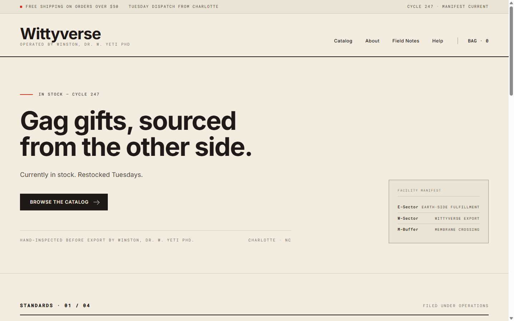
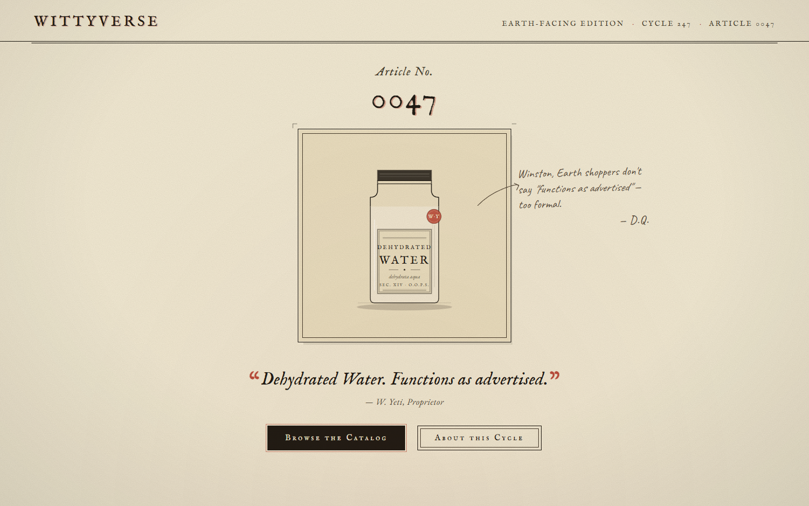
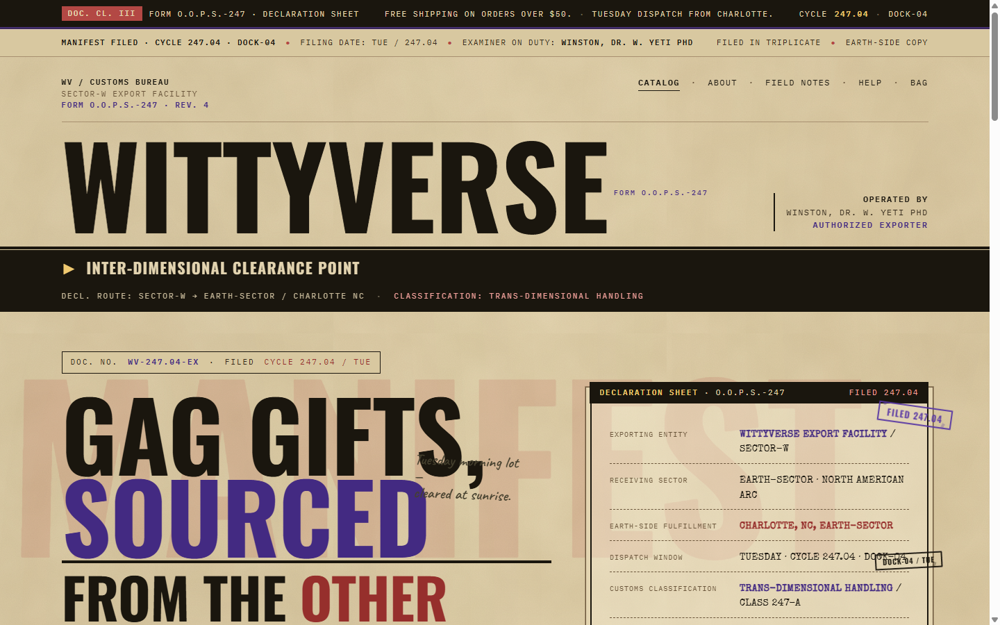
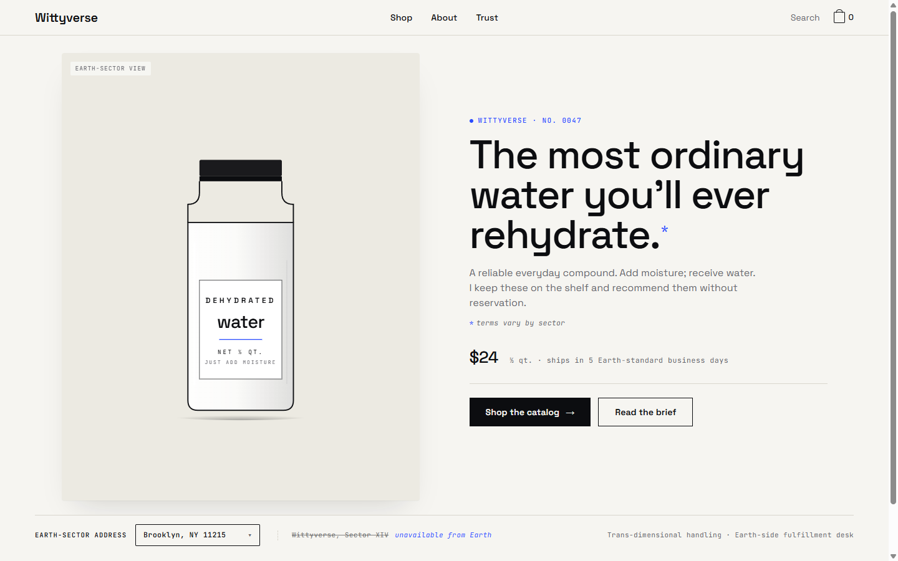
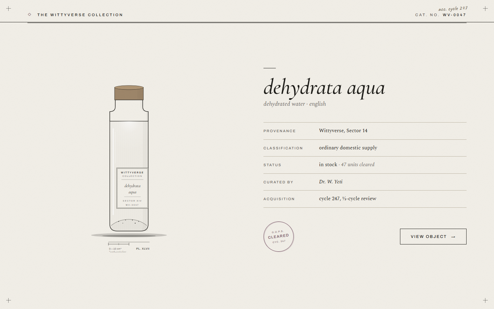
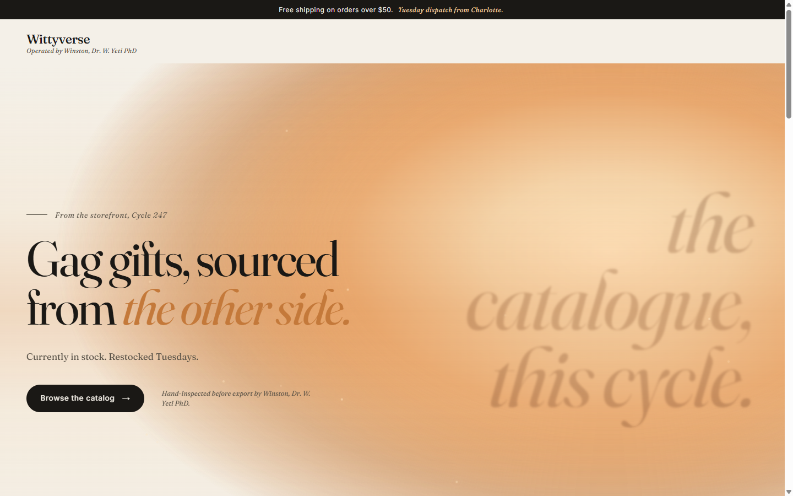

Quick Reference
If you only read one section. The 30-second answer to "what is Wittyverse?"
- TBD
Strategy & Positioning
Strategy summary placeholder. This is where the 3-5 sentence summary of what Wittyverse is, who it's for, and the positioning differentiator will live. Length-tested to roughly match a real summary so the layout doesn't shift when content lands.
Customer
- Who
- Customer description placeholder — one line about who they are.
- Why they care
- Motivation placeholder — one line about why this customer cares about what we make.
- What they want
- Desire placeholder — one line about what they want from Wittyverse specifically.
Voice & Messaging
Personality
Do
Don't
Messaging Framework
- Tagline
- Value Prop
- Boilerplate
Sample Copy
Sample copy renders from voice.json. Toggle voice preset above to compare variants when more than one exists.
Visual System
Logo
Clear Space
Maintain clear space equal to the height of the W mark on all sides. (Visual diagram TBD when real logo lands.)
Don't
- ✗ Don't stretch or skew the mark
- ✗ Don't apply gradients or drop shadows
- ✗ Don't place on busy photo backgrounds without a solid backplate
Avatar / Small-Size Mark
Test legibility at the smallest required sizes — favicons, social media avatars. Per the playbook's worst-case asset principle: a mark that fails at 16px will fail wherever it matters most.
- ✓ Avatar always sits on a solid color (canon: lime or orange backplate)
- ✓ Mark is centered with consistent padding (~15% of avatar size)
- ✗ Don't use the wordmark at small sizes; always use the W monogram
Color
Palette
Pairings
Canonical color combinations and their roles.
Accessibility (WCAG 2.1)
Contrast ratios for the canon pairings. Body copy must meet AA (4.5:1) at minimum.
| Pairing | Ratio | Normal | Large |
|---|---|---|---|
| Ink on Cream | 17.16:1 | AAA | AAA |
| Ink on White | 18.64:1 | AAA | AAA |
| Cream on Ink | 17.16:1 | AAA | AAA |
| Lime on Ink | 12.48:1 | AAA | AAA |
| Cream on Purple | 8.65:1 | AAA | AAA |
| Lime on Purple | 6.29:1 | AA | AAA |
| Orange on Ink | 6.56:1 | AA | AAA |
| Ink on Lime | 12.48:1 | AAA | AAA |
| Orange on Cream (decorative only) | 2.62:1 | FAIL | FAIL |
Dark / Light Mode Notes
The page is purposefully dark-leaning (purple gradient background) by default — Wittyverse is a "lights down, neon up" brand. For longer-form text surfaces (blog, docs, product pages) flip to a cream-dominant background with ink text — same palette, just a different anchor. Avoid switching mid-page.
- ✓ Default surfaces (hero, marquee, social): purple-dark anchor with cream/lime text
- ✓ Long-form surfaces (article, doc): cream anchor with ink text, purple/orange as accents only
- ✗ Don't use orange on cream for body copy (fails AA — decorative use only)
- ✗ Don't auto-invert via OS preference; the brand has a default mood
Typography
Type Specimens
Type Scale
Display sizes use clamp() for fluid scaling. Body copy is fixed-pixel for predictable reading rhythm.
| Token | Use | Size | Weight / Style |
|---|---|---|---|
| Hero | Landing-page H1 | clamp(48px, 7vw, 88px) | Display 900 italic, skewX(-6deg) |
| H2 | Section header | clamp(36px, 5vw, 56px) | Display 900 italic, skewX(-6deg) |
| H3 | Sub-section header | clamp(24px, 3vw, 32px) | Display 800 italic, skewX(-5deg) |
| H4 | Card / sub-block label | 18-22px | Display 800 italic uppercase |
| Card title | Cards, surface labels | 32px | Display 900 italic, skewX(-5deg) |
| CTA | Buttons | 16-18px | Display 900 italic uppercase |
| Body | Paragraph copy | 14-16px | Inter 400-500, line-height 1.55-1.6 |
| Eyebrow / Label | Small caps above headings | 11px | Inter 800 uppercase, letter-spacing 0.14em |
| Caption | Hex codes, small print | 11-13px | Inter 600-700 |
Pairings & Don'ts
Do
- Pair Display headline + Inter subline (never Display + Display).
- Use Lilita One sparingly — corner badges, eyebrows, "v1" markers.
- Use the skewX(-5deg/-6deg) tilt on all Display-set headlines.
- Reserve uppercase for Display + eyebrows. Body stays sentence case.
Don't
- Don't run body copy in Big Shoulders or Lilita.
- Don't lower the skew below -4deg or above -7deg — it loses its punch.
- Don't combine 3+ display weights in the same composition.
- Don't justify body text — left-align everywhere.
Imagery & Illustration
Direction (placeholder)
- Mood
- Mood placeholder — descriptors of the emotional register the imagery should sit in (e.g., "neon-lit, mid-century, slightly haunted").
- Color Treatment
- Color-treatment placeholder — how photography/illustration is graded against the canon palette (saturation, dominant hue, blacks/whites).
- Subjects
- Subjects placeholder — what kinds of objects, people, or scenes are in-brand vs out-of-brand.
- Composition
- Composition placeholder — framing rules, hard-shadow / halftone usage, off-center vs centered, decorative motifs (the ✦ star is canon decorative).
- Don'ts
- Don'ts placeholder — categories of imagery to avoid (e.g., generic stock photo, over-rendered 3D).
Current assets in the wild
Real assets already shipping in the Wittyverse repo. These are reference points for current state — direction above is what gets defined deliberately later.
Iconography
Wittyverse does not yet have a defined icon system. When defined, the system should fit the brand's existing language: rounded geometry, 2-3px stroke, hand-drawn feel rather than precise grid icons. Filled glyphs (with ink stroke + lime/orange accent fill) likely match the chunky, slightly-pulpy register better than thin-line outlined icons.
Layout, Spacing, Grid
Spacing Scale
Base unit 4px. Use the listed steps; avoid intermediate values.
Grid & Container
| Token | Value | Notes |
|---|---|---|
| Max-width (page) | 1200px | Outer container for topbar, main, footer. |
| Gutters | 24px desktop · 16px mobile | Horizontal padding on the container. |
| Section spacing | 64px | Vertical rhythm between top-level sections. |
| Card padding | 24-28px | Cream cards with ink border + hard ink shadow. |
| Card radius | 20px | Outer cards. Inner cards use 12-14px. |
| Card shadow | 0 8px 0 ink + soft drop | Hard offset shadow is signature; no soft-only shadows. |
| Mobile breakpoint | 720px | Multi-col grids collapse to single column below this. |
Composition Principles
Do
- Compose asymmetrically — off-centered hero CTAs, tilted display type.
- Use hard ink shadows (0 4-8px 0 ink) as the brand's signature depth.
- Layer flat color blocks over a purple-gradient backdrop.
- Use the ✦ star and pipe (|) as decorative separators in the brand chrome.
Don't
- Don't use soft drop-shadows alone — pair with the hard offset shadow.
- Don't justify text or center long-form body copy.
- Don't use thin hairline borders — minimum 2px, brand standard 3-4px.
- Don't break out of the spacing scale for "almost-right" gaps.
Surfaces — Compare Lab
The 6 medium templates rendered live. Each surface uses a different canon pairing so the page doubles as a palette-in-use sheet. Toggle voice/palette presets in the topbar to see ripple.
Asset Gallery
Existing real assets from the Wittyverse explorations and brand archive. Mix of current state (monogram, background) and earlier directional studies (Vignelli, Slot10, etc.).






Changelog
Versioned record of brand-guidelines changes. Add an entry to data/changelog.json on every meaningful update.